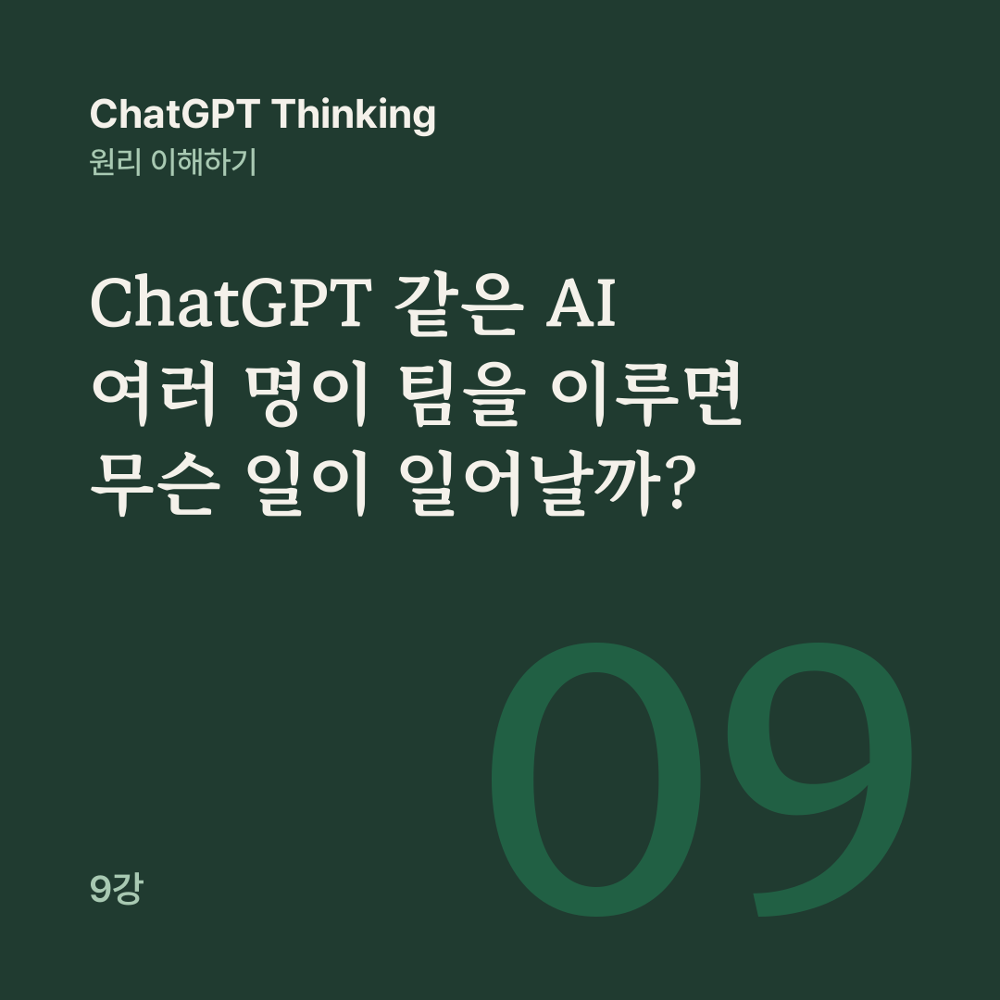

AI 원리 노트 · ChatGPT Thinking 9강
좋은 AI 팀은 단순히 일을 많이 하는 팀이 아니라 서로의 결과를 검토하고, 모르는 것을 드러내며, 중요한 결정에서 사람의 통제를 유지하는 팀입니다.
8강에서는 AI 에이전트가 도구를 사용해 여러 단계의 작업을 수행하는 원리를 배웠습니다. 그렇다면 똑똑한 AI 한 명에게 모든 일을 맡기는 것과, 여러 AI에게 전문가 역할을 나누어 협업하게 하는 것 중 무엇이 더 좋을까요?
9강은 세미나를 준비하는 가상의 AI 팀을 따라가며 답을 찾아봅니다.
혼자 모든 일을 처리하는 직원도 있지만, 회사에서는 기획자, 조사 담당자, 재무 담당자, 검토 담당자가 서로 협력합니다. AI에서도 비슷한 구조를 만들 수 있습니다.
AI 한 명이 여러 도구를 쓰며 전체 작업을 진행하면 ‘싱글 에이전트’입니다. 여러 에이전트가 각자 맡은 업무를 수행하고 중간 결과를 전달하거나 통합해 목표 하나를 이루면 ‘멀티 에이전트 시스템’입니다.
에이전트가 여러 명이어도 기반 모델은 하나일 수 있습니다. 같은 모델을 쓰면서도 에이전트마다 지침, 도구, 접근 권한, 작업 범위를 다르게 줄 수 있습니다. 서로 다른 사람을 여러 명 고용하는 것보다는 전문 역할과 업무 흐름을 나누는 일에 가깝습니다.
다만 ChatGPT 하나에게 여러 역할을 요청한다고 독립된 멀티 에이전트가 생기지는 않으며, 실제로 운영하려면 이를 지원하는 시스템이 필요합니다.
가상의 회사가 다음 달에 고객 30명을 초청하는 세미나를 연다고 해 봅시다. 전체 예산은 100만 원입니다. 오케스트레이터라고도 부르는 AI 팀장은 목표를 이해하고 업무를 나누며 결과를 통합합니다.
조사 AI는 장소와 견적을 조사하고, 재무 AI는 예산과 비용을 검토하고, 홍보 AI는 초청 문구를 씁니다. 검증 AI는 출처, 숫자, 조건을 점검합니다. 목표와 우선순위를 정하고 승인하는 최종 판단은 사람이 맡습니다. 이렇게 일을 나눠 수행하는 방식을 ‘오케스트레이션’이라고 합니다.
팀장이 언제나 모든 일을 지휘하지는 않습니다. ‘중앙 관리자 방식’에서는 AI 팀장이 각 전문가에게 업무를 맡기고 결과를 받아 통합하며, 사용자와의 대화와 최종 답변도 팀장이 담당합니다. 여러 분야의 결과를 모아 보고서나 계획 하나를 만들 때 알맞습니다.
‘업무 인계 방식’에서는 처음 요청을 받은 AI가 적절한 전문가에게 작업의 제어권을 넘기고, 그 전문 AI가 이후 대화나 작업을 직접 맡을 수 있습니다. 고객 문의를 환불, 배송, 기술 지원 담당 AI로 연결하는 경우가 그렇습니다.
두 방식 모두 실제로 쓰이는 구조이고, 어느 쪽이 더 낫다고 단정할 수는 없습니다. 누가 최종 답변과 작업의 제어권을 갖는지가 중요한 선택 기준입니다.
여러 AI가 함께 일하면 일부 작업을 동시에 할 수 있습니다. 장소 조사, 예산 조사, 초안 작성이 서로 독립적이라면 나란히 진행해 시간을 줄일 수 있고, 결과는 마지막에 통합해 검증합니다.
그러나 장소의 최종 비용이 정해져야 정확한 예산표를 만들 수 있다면, 재무 AI는 조사 AI의 결과를 받아야 합니다.
여러 AI가 같은 문서를 동시에 고치면 서로의 변경 사항을 덮어쓸 위험도 있습니다. 좋은 멀티 에이전트 시스템은 동시에 진행할 작업과 순서를 지켜야 할 작업을 구별합니다.
예산 100만 원인 세미나를 두고 조사 AI와 재무 AI가 차례로 이렇게 보고합니다.
행사장 비용은 55만 원입니다. 단, 부가세 10%가 별도입니다.
행사장 55만 원, 식음료 30만 원, 홍보물 10만 원으로 총 95만 원입니다. 예산 내에 있습니다.
재무 AI는 행사장 비용에 부가세를 반영하지 않았습니다.
행사장 55만 원에 부가세 5만 5천 원, 식음료 30만 원, 홍보물 10만 원을 더하면 총액은 100만 5천 원으로, 예산을 5천 원 넘습니다. 교육용으로 가정한 금액이고, 실제 업무라면 다른 비용에 세금이 포함됐는지도 확인해야 합니다.
AI 팀장이라면 어떻게 해야 할까요? 계산 전문인 재무 AI의 답이라도 자동으로 맞지는 않고, 다수결로 정해서도 안 됩니다. 원래 견적과 세금 조건을 다시 확인하고 비용을 재계산해 불일치의 원인을 찾아야 합니다.
AI끼리 의견이 다를 때는 누가 더 자신 있게 말하는지를 보지 말고, 어떤 증거를 사용했는지 확인해야 합니다.
조사 담당자만 행사장 견적이 바뀐 사실을 알고 재무 담당자는 예전 견적을 쓴다면, 사람이든 AI든 계산이 틀어집니다. 그래서 여러 에이전트에게는 공통으로 확인할 수 있는 업무 기록과 정보 전달 규칙이 중요합니다.
공통 목표, 확인된 사실과 미확인 정보, 결정 사항, 진행과 승인 상태를 기록해 두면 AI 팀장이 각 전문가의 작업 상태를 비교할 수 있습니다. 다만 고객 개인정보나 민감한 업무 자료는 해당 작업에 필요한 에이전트만 접근하도록 제한해야 합니다.
조사 AI가 조사하고, 재무 AI가 계산하고, 검증 AI가 검증했으니 이제 틀릴 가능성은 없겠지?
그렇지 않습니다. 여러 AI가 같은 잘못된 자료를 쓰면 모두 같은 결론에 도달할 수 있습니다.
공식 견적을 확인하지 않은 채 인터넷에 올라온 오래된 가격표만 공유하면, 여러 에이전트가 같은 오류를 되풀이할 수 있습니다. 이를 막으려면 AI끼리 의견을 비교하는 데서 그치지 말고 실제 증거를 확인해야 합니다.
멀티 에이전트의 검증은 네 단계로 나뉩니다. 먼저 각 에이전트가 맡은 작업의 조건을 충족했는지 점검하고, 장소 견적과 예산표의 금액처럼 서로 연결되는 결과가 일치하는지 비교합니다.
이어서 견적서, 공식 문서, 계산 결과처럼 AI의 주장과 독립적인 자료를 확인하고, 마지막으로 사람이 검증 결과와 남은 위험을 살펴 실행 여부를 결정합니다.
AI 팀장이 업무 조정자라는 사실과 최종 사실 검증자가 된다는 것이 같지는 않습니다. AI 팀장도 틀릴 수 있습니다. 그래서 증거 확인과 실행 승인 구조가 따로 필요합니다.
이 문장을 영어로 번역해 줘.
이런 작업에 AI 팀장, 번역 AI, 검토 AI, 승인 AI처럼 여러 단계를 만들면 불필요한 비용과 복잡성을 더할 수 있습니다. 간단한 번역이나 요약, 짧은 분석 한 건, 순서대로 진행해야 하는 작은 작업은 AI 한 명이 맡기에 알맞습니다.
반대로 수백 페이지의 자료를 검토하고, 서로 다른 시장을 조사하고, 독립적인 분석을 종합하는 일은 전문 에이전트로 나누는 편이 유리할 수 있습니다.
OpenAI의 실무 가이드도 가능하면 싱글 에이전트의 능력을 먼저 충분히 활용하고, 필요할 때 여러 에이전트로 나누라고 권합니다. 에이전트를 여럿 두면 비용과 관리 부담이 늘기 때문입니다.
여러 AI를 사용하는 목적은 업무를 효과적으로 나누는 것입니다.
AI끼리 협력해도 오류는 발생하고, 공유된 잘못된 정보는 팀 전체의 판단을 오염시킬 수 있습니다. 업무 분담, 정보 전달, 충돌 해결, 근거 검증, 권한 관리가 함께 작동해야 멀티 에이전트의 장점을 활용할 수 있습니다.
여러 AI에게 일을 나누는 법까지 왔습니다. 10강에서는 나만의 AI 업무 시스템을 설계합니다.
다음 글 · 10강 ChatGPT 같은 AI로 나만의 업무 시스템을 어떻게 설계할까?
이전 글 · 8강 ChatGPT 같은 AI 에이전트는 어떻게 스스로 일을 수행할까?
공개 대화의 9강을 블로그용으로 다시 편집했습니다. 원문 강의가 참고한 글은 아래 세 편입니다.
